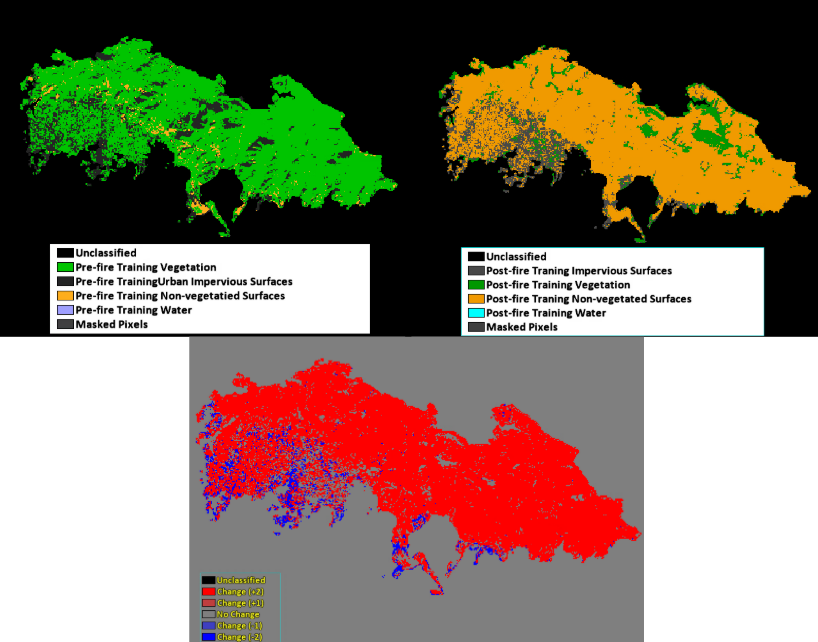
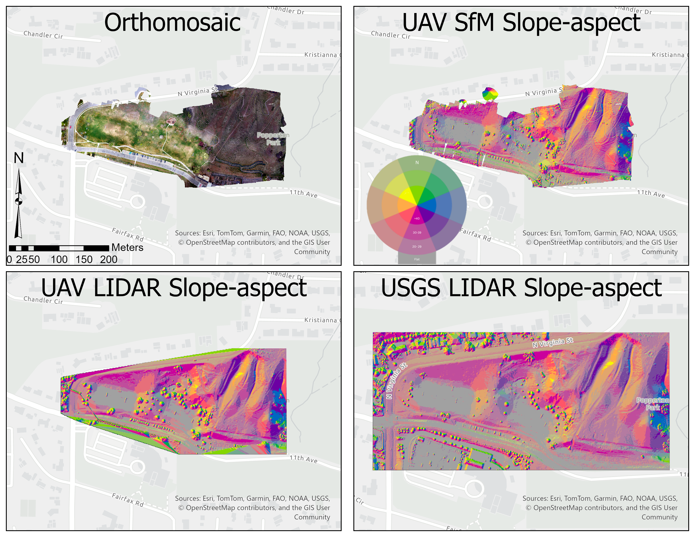
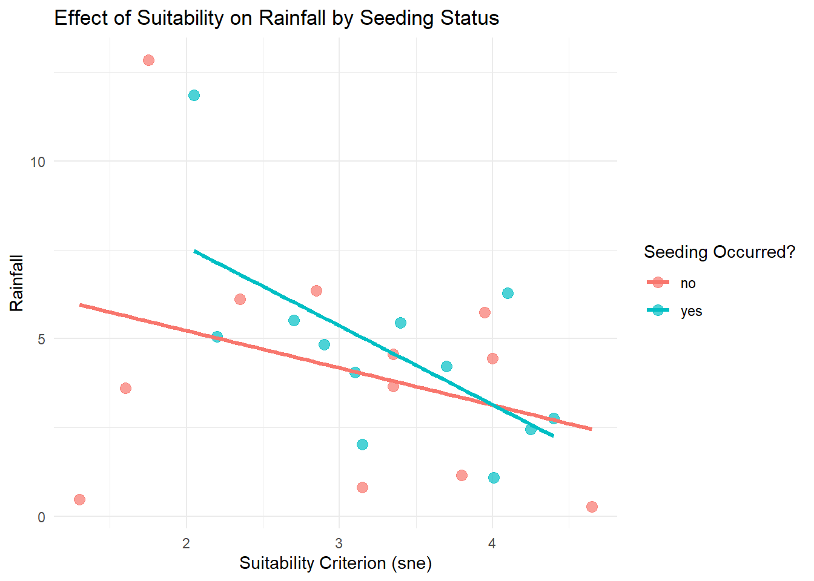

Atlas Map: Portugal
Geography 312: Cartographic design and layout.

Indonesia Mapping
Client project for Church history publication.


Korean Peninsula History
Historical map series for Lost Civilizations.

Nevada Watersheds
National AAG conference research presentation.

Geography 6000 Advanced Data Analysis
GEOG 6000 — Using Linear Regression to Quantify LGBTQ+ Suicide Ideation.

Geography 6110 Remote Sensing
GEOG 6110 — Visualizing the Eaton Fire with Remote Sensing.

Geography 6150
GEOG 6150 — Climate Suitability for Future Development Along the Wasatch Front.

Geography 6160 Spatial Data Science in Practice
GEOG 6160 — Using Machine Learning to Predict the Future Growth of Utah County.

Geography 6165 Web GIS
GEOG 6165 — Utah's History with the U.S. Highways: An Oral and Geographical History.

Geography 5170 Field Methods
GEOG 5170 — Modeling Popperton Park.

Geography 6161 Capstone in GIS
GEOG 6161 — Utah Prairie Dog Population Count Dashboard Optimization.

Geography 6680 Intro to R
GEOG 6680 — Final Project.